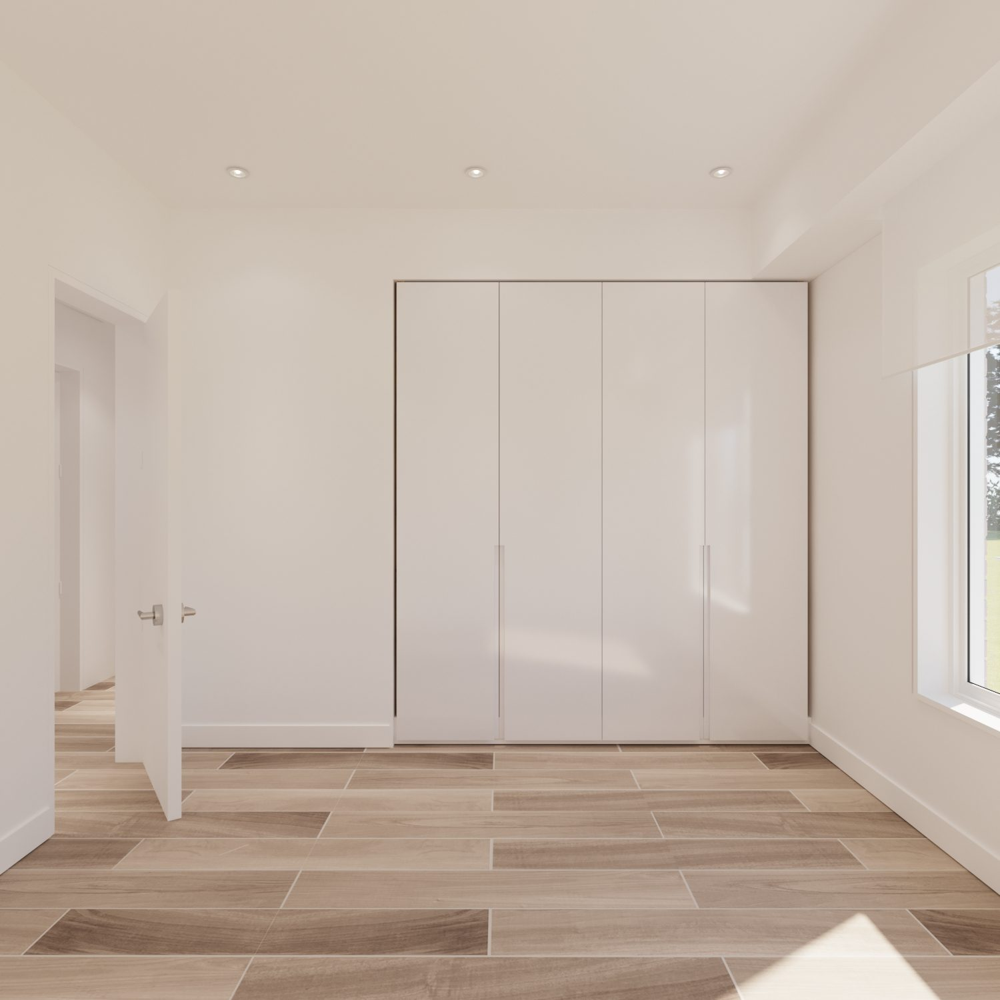
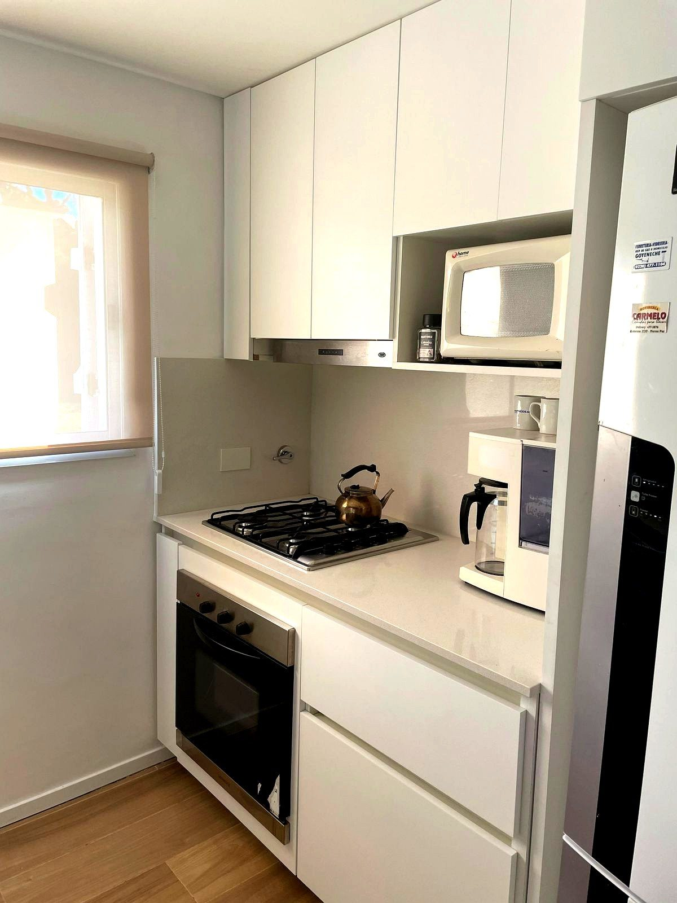
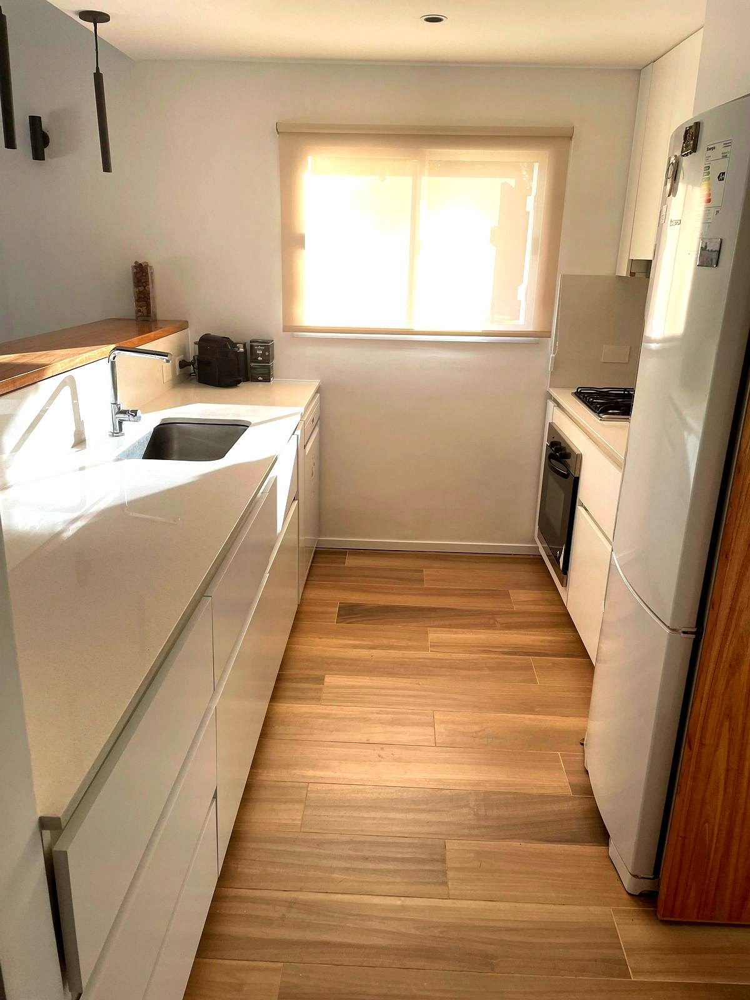
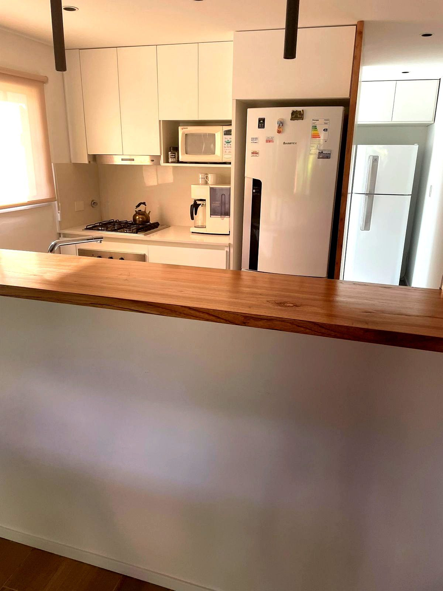
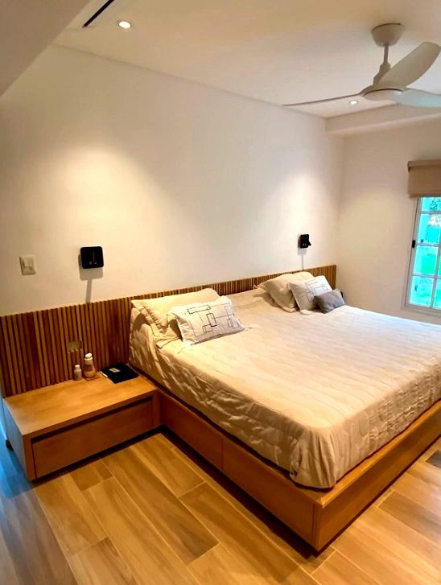
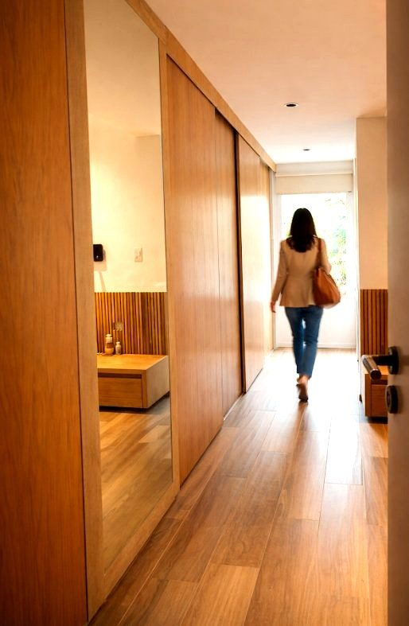
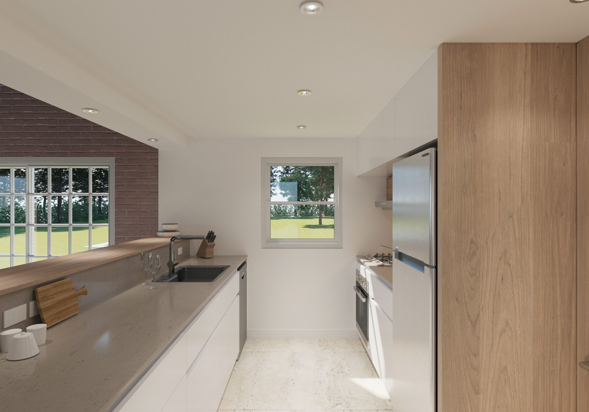
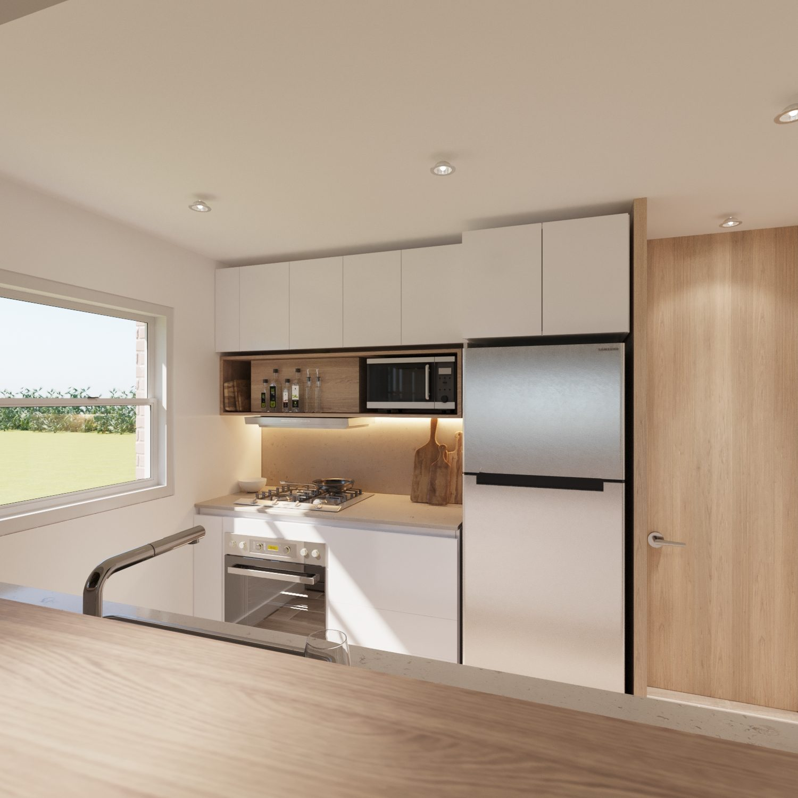
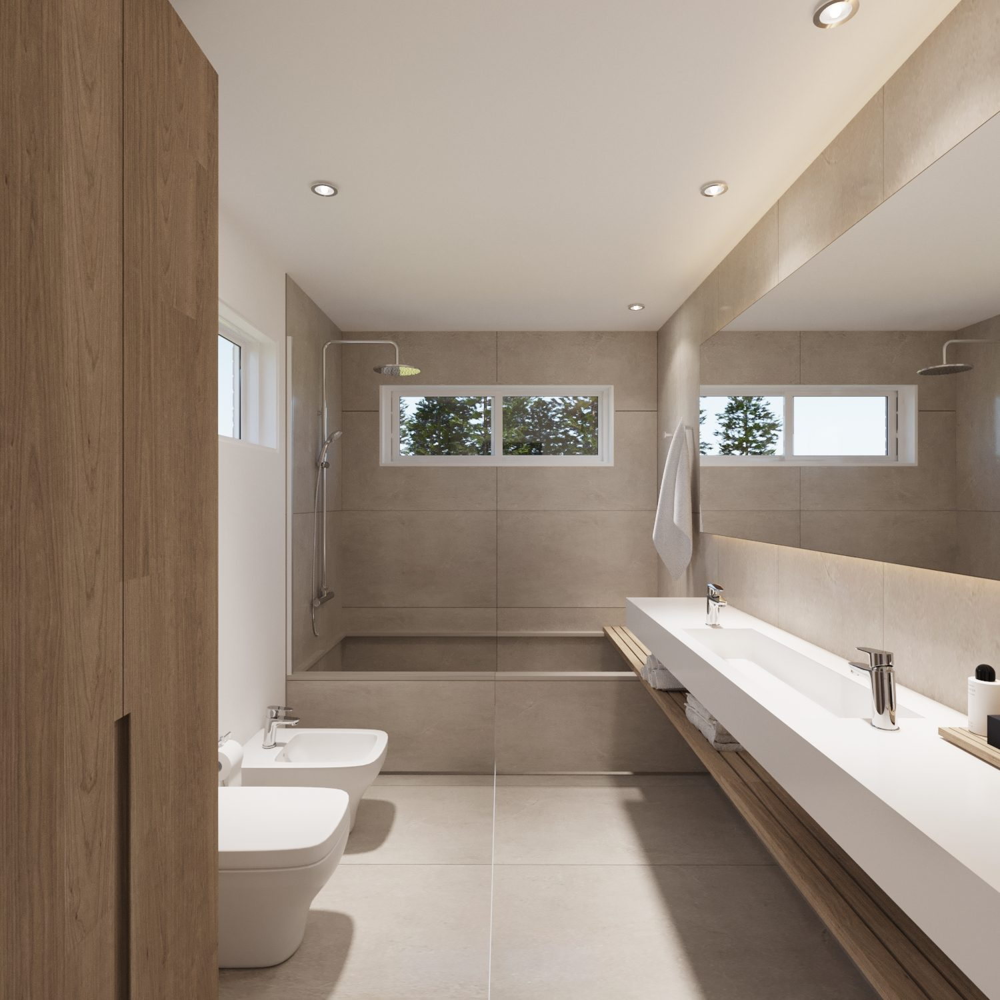
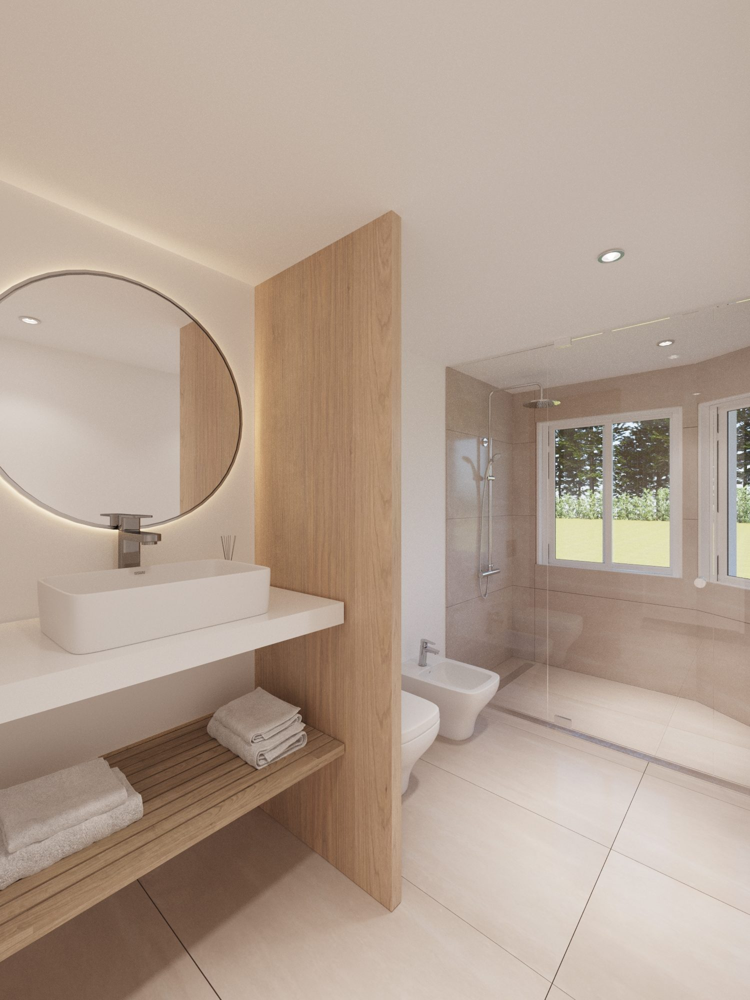

Reforma integral · El Moro Country Club, Marcos Paz · 2024
Ficha técnica
Descripción
Una intervención que transforma desde adentro. La reforma priorizó la integración total de la cocina y el living, eliminando barreras para ganar amplitud y luz natural. La paleta de materiales dialoga con lo existente: blanco, madera y el color cálido del machimbre original crean una atmósfera que no impone, sino que acompaña.
La decisión proyectual más significativa fue la incorporación de un ventanal al final del pasillo distributivo. Ese gesto simple —abrir hacia afuera— termina integrando todos los ambientes, dándole un cierre contundente a la circulación y transformando un espacio de tránsito en un remate lumínico que atraviesa toda la vivienda.
En la zona privada, se anexó un baño en suite a la habitación principal, conformando además un gran placard que responde a las necesidades reales de una familia de cuatro. El baño compartido existente fue reconvertido en lavadero —conectado directamente a la cocina—, mientras que una habitación remanente dio lugar al nuevo baño compartido. Un desenroque que responde a la lógica del día a día. El resultado es un baño más que sugerente.








